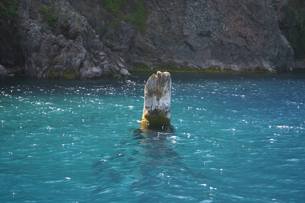
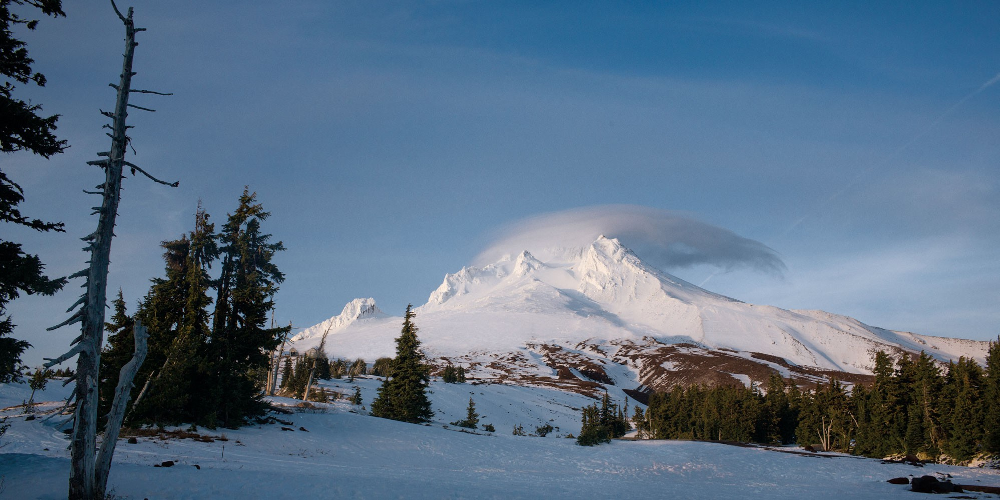
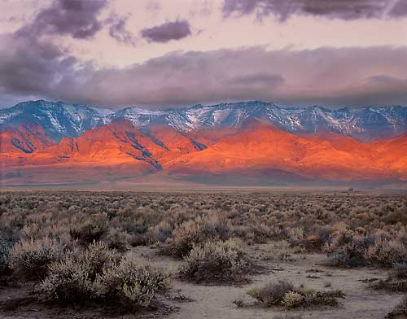
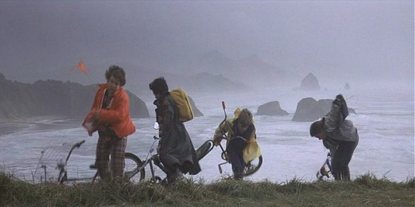

Oregon is a state in the Pacific Northwest region of the United States. Bordered on the west by the Pacific Ocean, on the north by Washington, on the south by California, on the east by Idaho, and on the southeast by Nevada. Oregon has a unique geography that has produced some of the most stunning sights. Should wou get the chance visit Oregon, these are some of the sights I would recommend you visit.
Crater Lake (Klamath: giiwas) is a caldera lake in south-central Oregon in the western United States. It is the main feature of Crater Lake National Park and is famous for its deep blue color and water clarity. The lake partly fills a nearly 2,148-foot (655 m)-deep caldera that was formed around 7,700 (± 150) years ago by the collapse of the volcano Mount Mazama. There are no rivers flowing into or out of the lake; the evaporation is compensated for by rain and snowfall at a rate such that the total amount of water is replaced every 250 years. With a depth of 1,949 feet (594 m), the lake is the deepest in the United States. In the world, it ranks tenth for maximum depth, and third for mean (average) depth.
Crater Lake is also known for the "Old Man of the Lake", a full-sized tree which is now a stump that has been bobbing vertically in the lake for over a century. The low temperature of the water has slowed the decomposition of the wood, hence the longevity of the bobbing tree.
Two islands are in Crater Lake: Wizard Island, formed from a cinder cone that erupted after Crater Lake began to fill with water, and the smaller Phantom Ship, which has seven trees living on it. There are also colonies of violet-green swallows and several varieties of wildflowers and lichens living there.
While having no indigenous fish population, the lake was stocked from 1888 to 1941 with a variety of fish. Several species have formed self-sustaining populations. Since 2002, one of the state's regular-issue license plate designs has featured Crater Lake. The commemorative Oregon State Quarter, which was released by the United States Mint in 2005, features an image of Crater Lake on its reverse.
Mount Hood, called Wy'east by the Multnomah tribe, is a potentially active stratovolcano in the Cascade Volcanic Arc of northern Oregon. It was formed by a subduction zone on the Pacific coast and rests in the Pacific Northwest region of the United States. It is located about 50 miles (80 km) east-southeast of Portland, on the border between Clackamas and Hood River counties. In addition to being Oregon's highest mountain, it is one of the loftiest mountains in the nation based on its prominence.
The height assigned to Mount Hood's snow-covered peak has varied over its history. Modern sources point to three different heights: 11,249 feet (3,429 m), a 1991 adjustment of a 1986 measurement by the U.S. National Geodetic Survey (NGS), 11,240 feet (3,426 m) based on a 1993 scientific expedition, and 11,239 feet (3,426 m) of slightly older origin. The peak is home to 12 named glaciers and snowfields. It is the highest point in Oregon and the fourth highest in the Cascade Range. Mount Hood is considered the Oregon volcano most likely to erupt, though based on its history, an explosive eruption is unlikely. Still, the odds of an eruption in the next 30 years are estimated at between 3 and 7 percent, so the U.S. Geological Survey (USGS) characterizes it as "potentially active", but the mountain is informally considered dormant.
Mount Hood is host to 12 named glaciers or snow fields, the most visited of which is Palmer Glacier, partially within the Timberline Lodge ski area and on the most popular climbing route. The glaciers are almost exclusively above the 6,000-foot (1,800 m) level, which also is about the average tree line elevation on Mount Hood. More than 80 percent of the glacial surface area is above 7,000 feet (2,100 m).
Mount Hood also hosts a number of ski resorts on the southern slopes. Mount Hood Meadows, located om the southeastern slope is the largest ski resort on the mountain. The Timberline Lodge and Ski Area on the southwestern side of Mount Hood, is designated as National Historic Landmark.
Steens Mountain is in the southeastern part of the U.S. state of Oregon, and is a large fault-block mountain, Located in Harney County, it stretches some 50 miles (80 km) north to south, and rises from alongside the Alvord Desert at elevation of about 4,200 feet (1,300 m) to a summit elevation of 9,733 feet (2,967 m). It is sometimes confused with a mountain range but is properly a single mountain.
The Steens Mountain Wilderness encompasses 170,166 acres (68,864 ha) of Steens Mountain. 98,859 acres (40,007 ha) of the Wilderness are protected from grazing and free of cattle.
The mountain was called the "Snowy Mountains" by John Work, one of the fur traders who were the first Europeans in the area. It was renamed in 1860 for United States Army Major Enoch Steen, who fought and drove members of the Paiute tribe off the mountain.
The east face of Steens Mountain is composed mainly of basalts stacked one upon another. Lava flows several hundreds of feet thick inundated the region between 17 and 14 million years ago.
Steens Mountain is traversed by a 52-mile (84 km) loop road, most of which is suitable for passenger vehicles. The road reaches an elevation of 9,700 feet (3,000 m), making it the highest road in Oregon. It is possible to drive to the summit of the mountain and to other viewpoints such as the Kiger Gorge. Steens Mountain is also host to Steens Mountain High Altitude Running Camp. Other recreational activities enjoyed on and around Steens Mountain are camping, picknicking, bicycling, hiking, hunting, sightseeing, soaring, and exploring. There are numerous hot springs along the base of Steens Mountain, including Alvord Hot Springs. Far from city lights, stargazing is also popular.
Haystack Rock is a 235-foot (72-meter) sea stack in Cannon Beach, Oregon. It is sometimes claimed locally to be the third-tallest such "intertidal" (meaning it can be reached by land) structure in the world, but there are no official references to support this. A popular tourist destination, the monolithic rock is adjacent to the beach and accessible by foot at low tide. The Haystack Rock tide pools are home to many intertidal animals, including starfish, sea anemone, crabs, chitons, limpets, and sea slugs. The rock is also a nesting site for many sea birds, including terns and puffins.
Haystack Rock is located about 1.5 miles (2.4 km) south of downtown Cannon Beach in Clatsop County and about 80 miles (130 km) west of Portland. The nearest major road is U.S. Route 101. Haystack Rock is part of the Tolovana Beach State Recreation Site. The area below the mean high water (MHW) level is managed by Oregon Parks and Recreation. The area above the MHW level is managed by the Oregon Islands National Wildlife Refuge of the United States Fish and Wildlife Service.
Composed of basalt, Haystack Rock was formed by lava flows emanating from the Blue Mountains and Columbia basin about 15-16 million years ago. The lava flows created many of the Oregon coast's natural features, including Tillamook Head, Arch Cape, and Saddle Mountain. Haystack Rock was once joined to the coastline but years of erosion have since separated the monolith from the coast. Three smaller, adjacent rock formations to the south of Haystack Rock are collectively called "The Needles".
Visitors to Haystack Rock can view many species of marine wildlife in their natural habitat during low tide. The thin strip of rock and sand that connects it to the beach at these times features many tide pools. The area surrounding the rock is popular for picnicking, kite-flying, and bird-watching. Artists and photographers can be found capturing the beauty of Haystack Rock on canvas or on film. Haystack Rock is one of the most identifiable geological formations of Oregon. Many people each year become temporarily trapped on Haystack Rock when high tide engulfs the rock in water, necessitating rescue by the United States Coast Guard or local authorities. Oregon's beaches are publicly owned, and there are several hotels along the beachfront within walking distance of Haystack Rock, making the area congested with tourists during the summer.
Haystack Rock can be seen in the opening scene of cult classic movie, The Goonies, when the Fratellis are fleeing from the police and then enter a race on the beach. It can be seen in the background. Later in the film you can see the Haystack Rock again when Mikey is pointing out some rocks in the distance.
Crown Point (also known historically as Thor's Heights or Thor's Crown) is a basalt promontory on the Columbia River Gorge and an associated state park in the U.S. state of Oregon. It is located in eastern Multnomah County, approximately 15 miles (24 km) east of Portland. Crown Point is one of the scenic lookouts along the Historic Columbia River Highway, providing a panoramic view of part of the Columbia River. It stands 733 feet (223 m) above the river and is the remains of a lava flow that filled the ancestral channel of the Columbia River 14 to 17 million years ago. The Point was designated a National Natural Landmark in 1971.
Vista House is an observatory at Crown Point that also serves as a memorial to Oregon pioneers and as a comfort station for travelers on the Historic Columbia River Highway. The site, on a rocky promontory, is 733 feet (223 m) above the Columbia River on the south side of the Columbia River Gorge. The building shows great sensitivity to its site in the Columbia River Gorge near Corbett, and is listed on the National Register of Historic Places.
The Columbia River Gorge is a canyon of the Columbia River in the Pacific Northwest of the United States. Up to 4,000 feet (1,200 m) deep, the canyon stretches for over 80 miles (130 km) as the river winds westward through the Cascade Range forming the boundary between the State of Washington to the north and Oregon to the south. Extending roughly from the confluence of the Columbia with the Deschutes River (and the towns of Roosevelt, Washington, and Arlington, Oregon) in the east down to the eastern reaches of the Portland metropolitan area, the water gap furnishes the only navigable route through the Cascades and the only water connection between the Columbia River Plateau and the Pacific Ocean.
The gorge holds federally protected status as a National Scenic Area called the Columbia Gorge National Scenic Area and is managed by the Columbia River Gorge Commission and the US Forest Service. The gorge is a popular recreational destination.